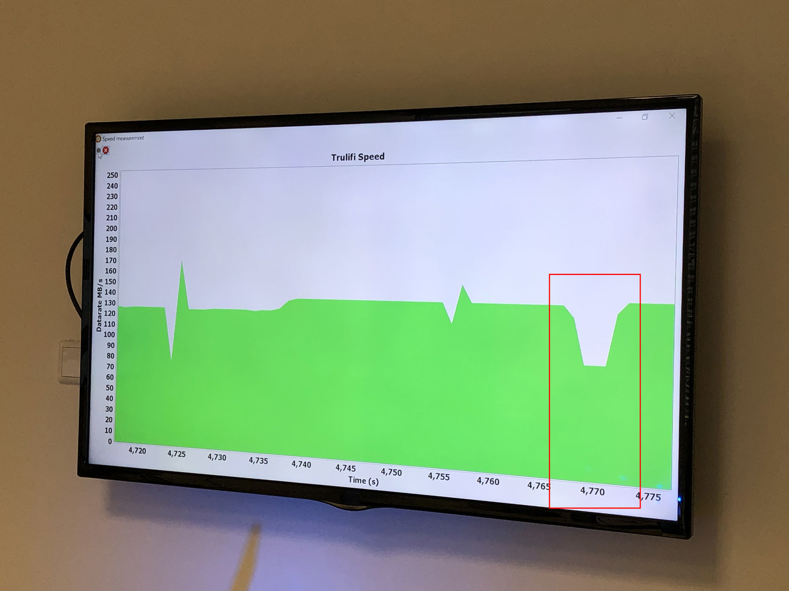

Posiblemente hayas adivinado las desventajas del LiFi conforme leías las ventajas. Son, principalmente, dos: hay que estar iluminado y se necesitarían muchas bombillas para cubrir una zona como una oficina o una casa. Si no hay luz, no hay conexión. Decíamos antes que la luminaria se enciende y se apaga a tales velocidades que el ojo no lo percibe, pero sí el fotorreceptor. Pero el fotorreceptor, claro está, tiene que tener acceso directo a la luz. Basta con tapar el fotorreceptor con cualquier objeto para dejarlo a oscuras y, por tanto, cortar la conexión. En una demo a la que asistimos con Signify pudimos ver que con solo pasar la mano por encima del sensor cae la velocidad. Y eso hablando solo del hogar, pero tenemos que tener en cuenta que también nos conectamos desde los móviles. La conexión LiFi en móviles presenta un problema importante, y es que los bolsillos de los pantalones son opacos. Si metes el móvil en el bolsillo, la mochila, el bolso o cualquier recipiente que no sea transparente puedes seguir teniendo WiFi, pero si usas un sistema LiFi, el fotorreceptor del móvil no verá la luz y, por lo tanto, no tendría conexión.
